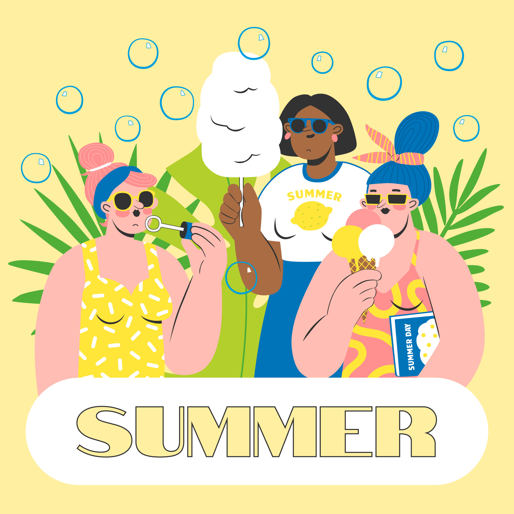
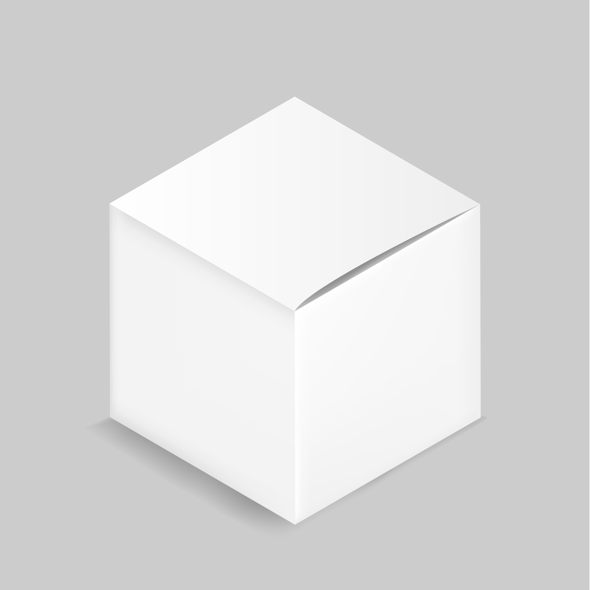

Ecercices 1 : Animation Clignotement
Warning !
Exercice 2 : Glissement à l'apparition

Exercice 3 : Rotation infinie

Exercice 4 : Bouton qui pulse
Exercice 5 : Apparition en fondu + glissement

Exercice 6 : Flamme animée
Exercice 7 : Écriture qui se dessine
Hello world !!!